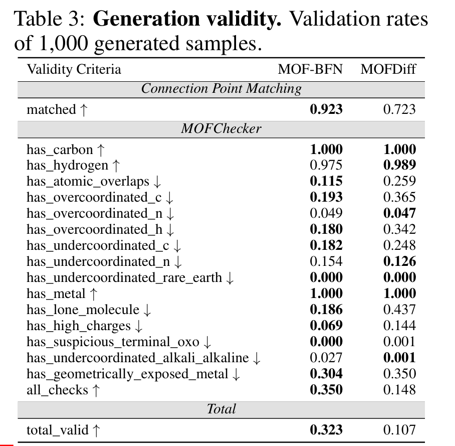
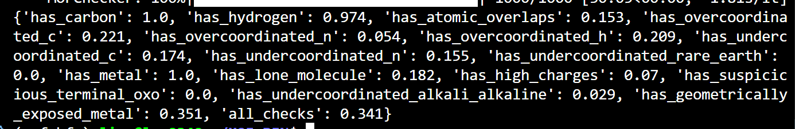
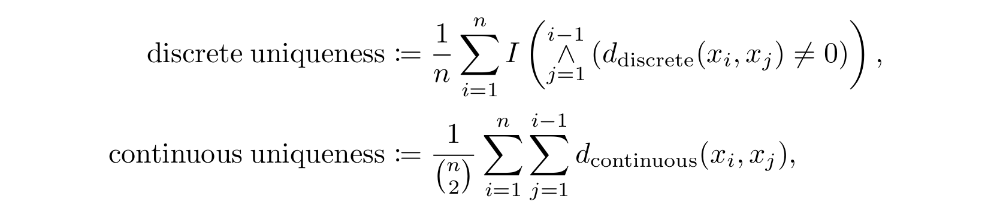
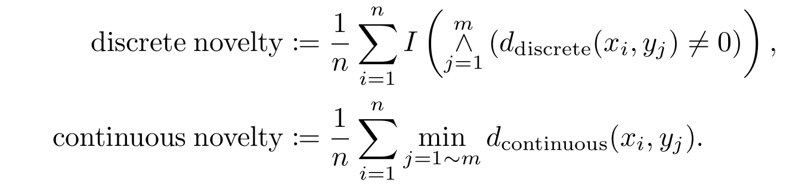

mof reproduction
De Novo测评¶


| Validity Criteria | 论文 MOF-BFN | 你的实验结果 | 差值（你 - 论文） |
|---|---|---|---|
| Connection Point Matching | |||
| matched ↑ | 0.923 | 未给出 | – |
| MOFChecker | |||
| has_carbon ↑ | 1.000 | 1.000 | +0.000 |
| has_hydrogen ↑ | 0.975 | 0.974 | -0.001 |
| has_atomic_overlaps ↓ | 0.115 | 0.153 | +0.038 |
| has_overcoordinated_c ↓ | 0.193 | 0.221 | +0.028 |
| has_overcoordinated_n ↓ | 0.049 | 0.054 | +0.005 |
| has_overcoordinated_h ↓ | 0.180 | 0.209 | +0.029 |
| has_undercoordinated_c ↓ | 0.182 | 0.174 | -0.008 |
| has_undercoordinated_n ↓ | 0.154 | 0.155 | +0.001 |
| has_undercoordinated_rare_earth ↓ | 0.000 | 0.000 | +0.000 |
| has_metal ↑ | 1.000 | 1.000 | +0.000 |
| has_lone_molecule ↓ | 0.186 | 0.182 | -0.004 |
| has_high_charges ↓ | 0.069 | 0.070 | +0.001 |
| has_suspicious_terminal_oxo ↓ | 0.000 | 0.000 | +0.000 |
| has_undercoordinated_alkali_alkaline ↓ | 0.027 | 0.029 | +0.002 |
| has_geometrically_exposed_metal ↓ | 0.304 | 0.351 | +0.047 |
| all_checks ↑ | 0.350 | 0.341 | -0.009 |
实验结果符合论文的结果。
通用评价指标¶
- MOFDIFF: COARSE-GRAINED DIFFUSION FOR METAL ORGANIC FRAMEWORK DESIGN
- VNU（Valid, Novel, Unique） 评价体系
- Valid：
- 连接匹配（Matched Connection）： 金属连接点和非金属连接点的数量必须相等、。
- 力场弛豫（Relaxation）： 原子结构必须能在力场下“收敛”，证明它在物理上是稳定的，不会发生原子重叠或结构崩溃。
MOFChecker： 使用第三方工具检查元素组成、孔隙率、电荷分布以及是否有断开的原子。
- Novel： 生成的 MOF 不能是训练集里的已知MOF，通过比较
MOFid来确认。 - Unique： 10,000 个样本要各具特色。
[!NOTE]
为了验证它能不能设计出捕捉二氧化碳的“特种材料”，作者动用了分子模拟。
- 潜空间优化（Latent Optimization）： 模型不是盲目乱抽样，而是利用 Adam 优化器 在模型的潜空间里定向搜索，寻找那些预测 CO2 工作容量最高的结构。
- GCMC 模拟：作者实现了大正则系综蒙特卡洛（GCMC,grand canonical Monte Carlo）模拟，计算了：
- 工作容量（Working Capacity）： 循环中真正能抓多少二氧化碳。
- 选择性（Selectivity）： 能不能在氮气堆里精准抓出二氧化碳。
- 吸附热（Heat of Adsorption）： 抓得牢不牢。
- MOFCHECKER
- Sanity checks:
- Presence of at least one metal, carbon and hydrogen atom
- Overlapping atoms (distance between atoms above covalent radius of the smaller atom)
- Overvalent carbons (coordination number above 4), nitrogens (heuristics), or hydrogens (CN > 1)
- Missing hydrogen on common coordination geometries of C and N (heuristics)
- Atoms with excessive EQeq partial charge
- Basic analysis:
- Presence of floating atoms or molecules
- Hash of the atomic structure graph (useful to identify duplicates)
- 元素组成检查，原子重叠检查，超价检查，缺失氢原子检查，异常部分电荷（原子的电荷极高或极低），孤立原子或分子，原子结构图哈希 （去重）
实验可合成性¶
产品有效性与合成难易度¶
-
System of Agentic AI for the Discovery of Metal-Organic Frameworks
-
孔隙率筛选 (Porosity Screening via Zeo++)：
- PLD (Pore Limiting Diameter)：限孔直径必须 \(> 2.5\) Å（确保小分子如 \(N_2\) 能通过）。
- LCD (Largest Cavity Diameter)：最大空腔直径。
- Void Fraction (空隙率)：要求 \(> 30\%\)。
- 可及孔容 (Accessible Volume)：要求可及孔体积必须大于不可及孔体积。
- 使用 MACE-MP-0（机器学习力场）进行弛豫，结构必须能在力场下达到能量最低点，不发生原子重叠或晶格崩溃
- 配体合成路线分析 (Reaction Pathway)：
- 利用 Allchemy 软件对生成的有机配体进行逆合成分析，判断其是否可以从廉价易得的原料合成。
- 多维合成评分：
- SA score (Synthetic Accessibility)：合成难易程度。
- SCScore (Synthetic Complexity)：合成复杂性。
- BR-SAScore：专门针对桥接配体的改良评分。
- 人类专家盲测 (Human-in-the-loop Blind Test)：
- 指标：由经验丰富的实验化学家对 AI 生成的配体进行 1-5 分的打分（1 为极难合成，5 为极易合成）。
- 验证结果：将 AI 的预测与人类直觉对比，确保 AI 推荐的结构在化学上是合理的。
### 物理与力学稳定性
- 热稳定性评估 (\(T_d\))：
- 通过机器学习模型预测材料的热分解温度。
- 溶剂脱除稳定性 (Stability after Activation)：
- 预测材料在去除孔道内溶剂分子后，其骨架是否能保持完整。
- 力学强度 (Mechanical Integrity)：
- 体积模量 (Bulk Moduli)：利用机器学习力场计算材料的抗压能力，模量越高代表结构越坚固。
-
能量评估 (Formation Energy)：
- 使用高精度的 DFT (r2SCAN-D4) 计算形成能，确认其在热力学上的相对稳定性。
-
A generative artificial intelligence framework based on a molecular diffusion model for the design of metal-organic frameworks for carbon capture
-
合成可行性 (Synthesizability)
- SA Score (Synthetic Accessibility Score)：利用 RDKit 等工具计算配体的合成可及性分数。分数越低，代表该有机配体在实验室中被合成的可能性越高。
-
动力学稳定性评估 (Stability via Molecular Dynamics)
- MD 模拟：对初步筛选出的 MOF 进行 1 纳秒 (ns) 的分子动力学模拟（在 300 K 和 1 bar 条件下）。
- 判断标准：如果在模拟过程中晶格保持完整、没有发生剧烈的结构坍塌或化学键断裂，则认为该材料在室温下具有物理稳定性。
-
\(CO_2\) 吸附性能评估 (Performance Metrics)
- GNN 快速筛选：使用 晶体图神经网络 (Crystal Graph Neural Networks) 对数万个结构进行初步扫描，预测其 \(CO_2\) 吸附容量。
- GCMC 精确模拟：对 GNN 选出的佼佼者进行 大正则系综蒙特卡洛 (GCMC) 模拟。
- 工作条件：模拟在 298 K 和 0.15 bar（典型的烟道气分压）下的吸附容量。
- 容量指标：最终挑选出吸附容量大于 2 mmol/g 的高性能 MOF。
-
Continuous Uniqueness and Novelty Metrics for Generative Modeling of Inorganic Crystals
-
将“定性”的判断转变为“定量”的连续计算。
1. 唯一性 (Uniqueness)¶
唯一性衡量的是生成的 \(N\) 个样本中，有多少是互不相同的。
-
传统做法：只要两个结构超过了预设的阈值，就判定为重复。
-
新标准 (\(U_{d}\))：基于距离的唯一性。
-
公式逻辑：计算所有样本对之间的实际物理距离（实数值）的平均值。 在这两种情况下，数值越大代表样本集的多样性越高。
\[U_{d} = \frac{1}{N} \sum_{i=1}^{N} \exp\left(-\sum_{j \neq i} K(d(x_i, x_j))\right)\]
-
分析：它不再是简单的计数，而是考察样本在空间中的分布。如果大量样本堆在一起（距离很近），得分会迅速下降。这能有效识别出那些“换汤不换药”的生成结果。
2. 新颖性 (Novelty)¶
新颖性衡量生成的样本与训练数据集（已知材料）的差异。
-
新标准 (\(N_{d}\))：
-
计算每个生成样本到训练集中“最近邻居”的物理距离。 得分越高，表示生成结果与已知数据（训练集）的差异越大。
\[d_{min} = \min_{x_t \in X_{train}} d(x_g, x_t)\]
-
分析：通过设置一个连续的核函数，该指标能量化“创新的程度”。如果 AI 生成了一个和已知材料结构相似但元素不同的晶体，新指标能捕捉到这种“微创新”，而不是直接给 0 分或 1 分。
3. 距离函数的选择¶
- Sine-based Distance：专门衡量晶格对称性和原子位置。
- 它通过正弦函数处理原子坐标。由于晶体具有周期性（像无限重复的方格），原子的位置会在晶格中不断循环。正弦函数完美模拟了这种周期性——当一个原子从晶格的一头移动到另一头时，正弦值是平滑过渡的。
- 解决了“坐标平移”的问题。在旧指标下，如果你把整个结构向左平移了 \(0.1\) Å，系统可能判定为新结构；但在 Sine-based 距离下，它能识别出这其实是同一个东西。
- Descriptor-based Distance (Magpie)：Magpie 是一套预定义的特征向量（Descriptors），它将每个元素转化为一系列物理化学属性，如：
- 原子序数、电负性、原子半径、价电子数等。
- 计算方式：它会计算生成样本中所有元素的这些属性的统计量（平均值、方差、范围等），形成一个高维向量。两个晶体之间的距离就是这两个向量之间的欧氏距离
- 这样可以区分化学相似性
- 优势：这种多维度距离保证了评估标准具备 Lipschitz 连续性——即结构的小波动只会导致得分的小波动，评价结果极其稳定。
4. 评估标准的四大特征¶
论文提出，一个合格的评估标准必须满足：
- 连续性 (Continuity)：能区分相似度的等级。
- 区分度 (Discriminative power)：能分清是“化学组成变了”还是“晶体结构变了”。
- 置换不变性 (Permutation Invariance)：算出的得分不随样本录入顺序改变。
- 计算效率：能快速处理万级规模的生成数据。
-